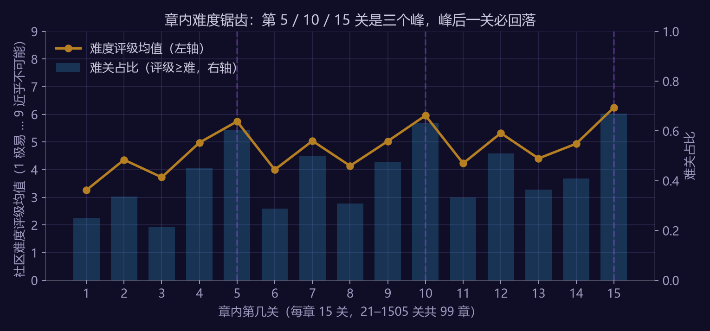
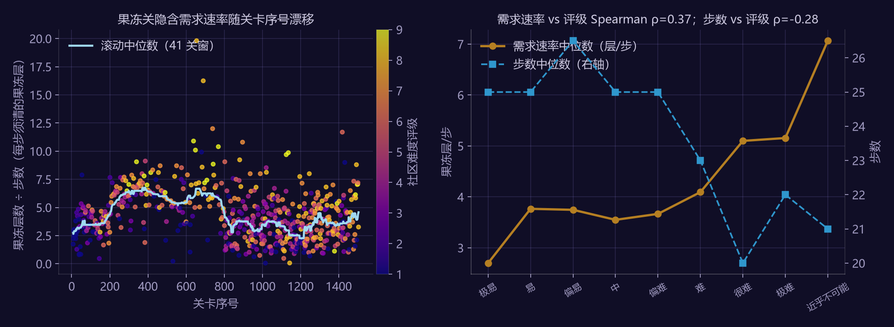
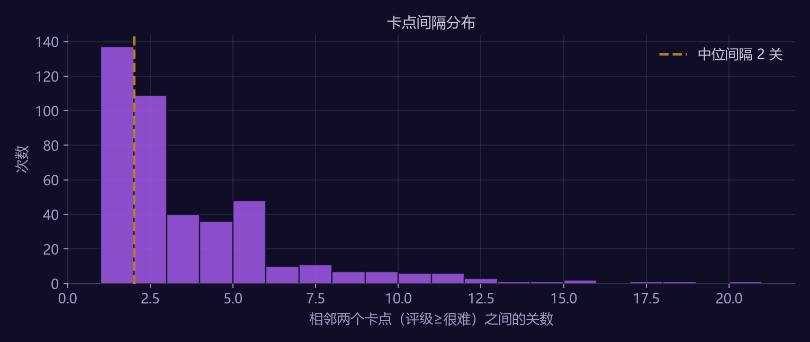
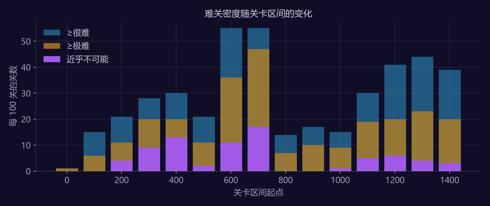
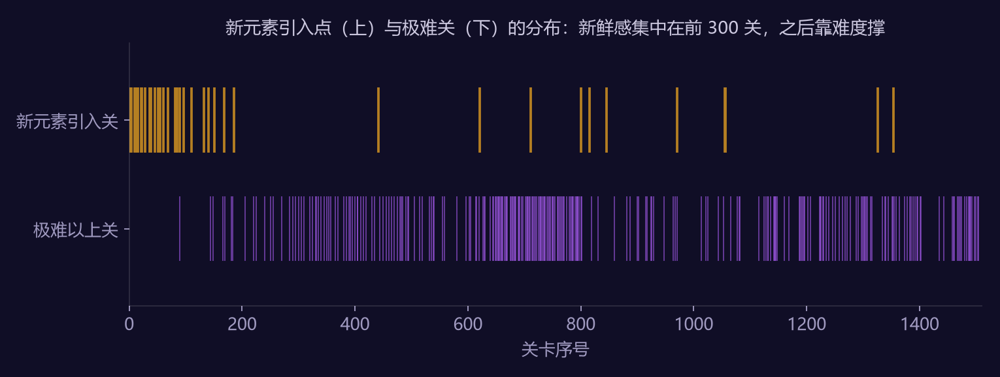
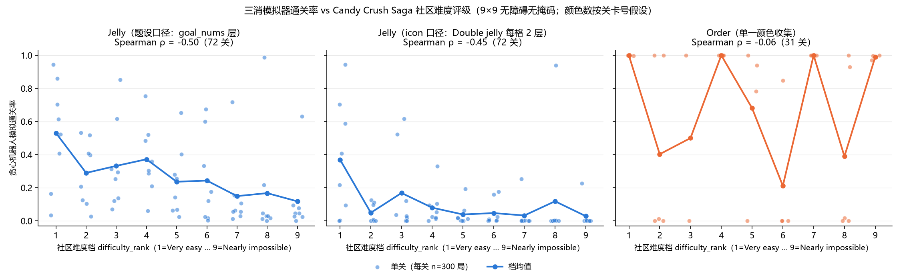

关于本拆解案的方法说明（请先读）
三消的关卡数据是公开的：每关的步数、目标、障碍写在关卡开局界面上，社区 wiki 逐关记录了十几年。但"公开"不等于"有结论"。本文的输入只有两样东西：
| 层 | 内容 | 可信度 |
|---|---|---|
| 数据层 | Candy Crush Saga 1–1505 关的类型 / 步数 / 目标物数量 / 社区难度评级（fandom wiki，经 Wayback 镜像抓取） | 关卡参数为游戏内可见的硬数据；难度评级是社区众包主观值，只用于排序不用于绝对量 |
| 推导层 | 章内难度锯齿、隐含需求速率、卡点间隔、新鲜感节奏、模拟器校准（§2–§6） | 我算出来的；每条都给"如果它错了会怎么看出来" |
| 锚点层 | 一位 300+ 关三消玩家的真实流失口述 + 我以玩家身份预写的直觉判断（§7） | 用来证伪模型，不是用来证明模型 |
方法上最重要的一件事写在 §6：我写了一个三消模拟器去"预测"社区难度评级，它基本失败了——模拟通关率与评级的秩相关只有 −0.5，而且这点相关几乎全部来自"目标量÷步数"这两个数本身。失败的原因（棋盘拓扑与障碍布局不在数据里）恰好就是本文最有用的设计结论。
1. 选题说明
三消是休闲品类里关卡策划岗位最多的玩法，而关卡策划每天面对的核心问题只有一个：这一关给多少步？ 步数决定通关率，通关率决定"失败→加步付费"这条最重要的变现链，也决定玩家会不会在某一关放弃。
行业里的做法（King、Playrix 都公开讲过）是用机器人跑几千局，看通关率再定步数。本文做的事分三段：先用 1,505 关的公开数据反推官方实际的难度节奏长什么样；再用一个最小三消模拟器检验"机器人调关"这条路在没有棋盘布局数据时能走多远；最后把方法用在配套的十关关卡包上。
数据规模与构成：
| 项 | 值 |
|---|---|
| 关卡 | 1–1505 关，Reality 前 100 章，连续无缺 |
| 类型 | 果冻 597（39.7%）/ 配料 370（24.6%）/ 收集 343（22.8%）/ 混合 179（11.9%）/ 未标 16 |
| 步数 | 全部有值；中位 23 |
| 社区难度评级 | 九档（极易 … 近乎不可能），覆盖 98% 的关 |
2. 章内难度锯齿：第 5 / 10 / 15 关是三个峰
把 21 关起的 99 章按"章内第几关"对齐，取每个位置的社区难度均值：
| 章内位置 | 1 | 2 | 3 | 4 | 5 | 6 | 7 | 8 |
|---|---|---|---|---|---|---|---|---|
| 难度均值 | 3.26 | 4.36 | 3.72 | 4.98 | 5.74 | 4.00 | 5.04 | 4.14 |
| 难关占比（≥难） | 25% | 34% | 21% | 45% | 60% | 29% | 50% | 31% |
| 章内位置 | 9 | 10 | 11 | 12 | 13 | 14 | 15 |
|---|---|---|---|---|---|---|---|
| 难度均值 | 5.03 | 5.96 | 4.23 | 5.32 | 4.41 | 4.94 | 6.25 |
| 难关占比（≥难） | 47% | 63% | 33% | 51% | 36% | 41% | 67% |

章内难度锯齿- 5 / 10 / 15 位的均值 5.98，其余位 4.45，Mann-Whitney 单侧 p = 3×10⁻²¹。这不是"章末最难"一条规律，而是每 5 关一个峰、峰后一关必回落（第 5→6 关、第 10→11 关平均回落 1.74 档）。
- 峰之间还有一层小锯齿：偶数位（2/4/7/9/12/14）普遍高于相邻奇数位。也就是说官方的节奏是"两步一小坎、五步一大坎"。
- 章首（第 1 关）是全章最松的位置（3.26），它承担的是"换章的新鲜感"而不是难度。
如果这条错了会怎么看出来：把章的起点错开 1–4 关重算，锯齿应该消失。我做了：错开 0 关时 5/10/15 位均值 5.98 vs 其他位 4.45（p=3×10⁻²¹）；错开 1 / 2 / 3 / 4 关后分别为 4.98 vs 4.71（p=0.04）、4.09 vs 4.93、4.91 vs 4.73、3.83 vs 4.99，优势全部消失。对齐是对的，不是巧合。
3. 隐含需求速率：步数不是难度，"每步要清多少"才是
对果冻关，定义 需求速率 = 果冻层总数 ÷ 步数（单层果冻计 1、双层计 2），即每一步平均必须清掉的果冻层。它是"步数预算公式"的核心量：
步数 = 目标量 ÷ 每步期望清除量 × 松紧系数
数据反推出的官方需求速率：
| 关卡区间 | 果冻层/步（中位） | 配料/步（中位） | 步数中位 |
|---|---|---|---|
| 1–200 | 3.2–3.5 | 0.16–0.20 | 25–27 |
| 201–800 | 5.1–7.0 | 0.27–0.60 | 19–23 |
| 801–1500 | 2.5–3.7 | 0.11–0.15 | 24–27 |

需求速率三个发现：
- 三段难度区制。201 关起需求速率翻倍（3.2→6.2），801 关起又腰斩回 3.5。这与社区记录的产品史一致（2013–2014 年的"地狱期"，之后大规模削弱），但这里是从关卡参数里直接读出来的，不需要知道历史。
- 需求速率比步数更能解释评级。果冻关 n=579：需求速率 vs 评级 Spearman ρ = +0.37（p=4×10⁻²⁰）；步数 vs 评级 ρ = −0.29。方向都对（步数越少越难），但"每步要清多少"解释力更强。按评级档看需求速率中位数：极易 2.70 → 难 4.09 → 很难 5.10 → 近乎不可能 7.07，单调。
- 配料关这套完全失效。配料/步 与评级 ρ = 0.002（n=358）。配料关的难度不在"几个配料"，在配料下落的列有没有被障碍堵死、棋盘有没有传送带。这是本文第一次撞上"棋盘拓扑不在数据里"这堵墙，§6 会再撞一次。
松紧系数怎么定：同一需求速率下，评级更高的关通常步数更少而不是目标更多。也就是说官方调难度优先动步数（松紧系数），不动目标量——目标量是给玩家看的"这关要做什么"，步数是策划的隐藏旋钮。
4. 卡点密度与间隔：难关不是稀有事件
以社区评级 ≥"很难"定义卡点（21 关起共 1,444 个有评级的关）：
| 指标 | 值 |
|---|---|
| 卡点数 | 429 / 1444 = 29.7% |
| 相邻卡点间隔 | 中位 2 关，均值 3.3，P25/P75 = 1 / 4 |
| 连续卡点段 | 单个 199 段、连续 2 关 64 段、3 关 16 段、4 关 12 段、6 关 1 段 |
| 卡点前一关 / 后一关难度均值 | 5.11 / 4.95（全体均值 4.71） |

卡点间隔- 近三成关卡被社区评为"很难"以上，中位间隔只有 2 关。卡点不是每章一两个的稀有事件，而是常态；付费加步的机会点密度远高于"每章一个付费墙"的直觉。
- 一个被证伪的直觉（我在看数据前预写的，见 §7）："卡点之后会给一关喘息"。数据说：卡点后一关的均值 4.95 仍高于全体均值 4.71。喘息只发生在固定位置（第 6、11 关），不跟随任意卡点。官方的节奏是按位置排的，不是按"上一关有多难"排的。
按 100 关分桶的难关密度（评级≥很难 / ≥极难 / 近乎不可能）：
| 区间 | ≥很难 | ≥极难 | 近乎不可能 | 区间 | ≥很难 | ≥极难 | 近乎不可能 | |
|---|---|---|---|---|---|---|---|---|
| 1–100 | 1 | 1 | 0 | 801–900 | 14 | 7 | 0 | |
| 101–200 | 15 | 6 | 0 | 901–1000 | 17 | 10 | 0 | |
| 201–300 | 21 | 11 | 4 | 1001–1100 | 15 | 9 | 1 | |
| 301–400 | 28 | 20 | 9 | 1101–1200 | 30 | 19 | 5 | |
| 401–500 | 30 | 20 | 13 | 1201–1300 | 41 | 20 | 6 | |
| 501–600 | 21 | 11 | 2 | 1301–1400 | 44 | 23 | 4 | |
| 601–700 | 55 | 36 | 11 | 1401–1500 | 39 | 20 | 3 | |
| 701–800 | 55 | 47 | 17 |

难关密度601–800 关每 100 关有 55 个"很难"以上，随后 801–1100 骤降到 14–17，与 §3 的需求速率区制完全对应。混合目标关（两种目标同时要求）均值 5.64，单目标关 4.58——混合目标本身就是一档难度。
5. 新鲜感节奏：前 300 关每 11 关一个新元素，之后每 60–300 关一个
wiki 备注里记录了每个障碍 / 机制首次出现的关（"X is introduced"），排除"曾经在此引入"的历史条目后共 38 个引入点：
| 区间 | 新元素引入数 | 平均间隔 |
|---|---|---|
| 1–300 | 27 | 每 11 关一个 |
| 301–600 | 1 | 每 300 关一个 |
| 601–900 | 5 | 每 60 关一个 |
| 901–1200 | 3 | 每 100 关一个 |
| 1201–1500 | 2 | 每 150 关一个 |

新元素时间线前 300 关把几乎所有机制教完，之后 1,200 关靠已有元素的排列组合与难度撑内容。这正是 §7 玩家锚点要对照的东西。
数据的偏差要先说：wiki 对早期关卡的备注更完整，后期引入的元素可能漏记；这个表是下限。但 301–600 关只记到 1 个引入点，与 601 关后重新出现引入点的对比，不太可能全是漏记造成的。
6. 模拟器校准：一次基本失败的实验，以及它教会我的事
6.1 实验设计
写了一个最小三消模拟器（9×9 可裁形棋盘、5/6 色、条纹/包装/彩球三种特效、果冻与糖霜、贪心一步机器人），对每个难度档抽 8 关，用关卡的真实步数与果冻数构造关卡，每关跑 300 局，看模拟通关率能不能预测社区评级。棋盘形状和障碍布局 wiki 不提供，所以全部用空棋盘、果冻随机分布。
6.2 结果
| 难度档 | 极易 | 易 | 偏易 | 中 | 偏难 | 难 | 很难 | 极难 | 近乎不可能 |
|---|---|---|---|---|---|---|---|---|---|
| 果冻关模拟通关率均值 | 0.53 | 0.29 | 0.33 | 0.37 | 0.24 | 0.24 | 0.15 | 0.17 | 0.12 |
| 松紧系数中位（步数 ÷ 50% 通关所需步数） | 1.07 | 0.80 | 0.80 | 0.82 | 0.69 | 0.65 | 0.54 | 0.47 | 0.51 |

模拟器校准- 果冻关：Spearman ρ（通关率 vs 评级）= −0.50。趋势在，但档内离散极大（极易档里 0.03 到 0.94 都有），2/3/4 档基本持平。
- 更要命的是：模拟通关率与"目标量÷步数"的 ρ = −0.90，而"目标量÷步数"与评级的 ρ = +0.44。也就是说模拟器没有提供任何超出这两个数的解释力——它只是一个昂贵的除法器。
- 单色收集关：ρ = −0.06，完全失效。第 971 关的备注说明了原因："第一个要求收集棋盘上不会刷出的颜色的关"——后期收集关的目标色靠彩球与特效组合产出，空棋盘随机刷色的模拟器里它随手可得。
- 近失率（败局里估算只差 1–3 步的比例）各档都在 0.11–0.14，没有档间趋势。这个指标在当前模拟器里不带难度信息。
6.3 它教会我的事
失败的原因不是模拟器写得不好，而是难度的主体不在关卡参数里，在棋盘上：
- 障碍与锁定物（糖霜、巧克力、甘草锁、炸弹糖、传送门）的布局；
- 果冻的位置——角落、窄道、被障碍包围处；
- 颜色数（4/5/6 色对连锁率影响巨大，数据里只知道 5 色首次出现在第 3 关）；
- 目标色不刷新 / 特效物产出机制。
配套关卡包的验证过程给了一个可量化的例子：同样 32 层果冻，放在满盘的底部三行，贪心机器人 45 步通关率 55%；放在 H 形棋盘（两根四宽柱子、一格宽的桥）的底部，45 步通关率 14%；放在同一 H 形棋盘的中段，45 步 87%、22 步 33%。棋盘拓扑对通关率的杠杆，比目标量大一个量级。
所以"机器人调关"这条路是对的，但它的前提是机器人跑的是真实棋盘。用公开参数做模拟只能得到目标量÷步数已经告诉你的东西。这一节保留在正文，是因为一个会写模拟器的策划最容易犯的错，就是相信自己的模拟器。
7. 锚点：一位 300+ 关玩家，和一个预写直觉的分析者
7.1 玩家锚点
一位在开心消消乐（腾讯，三消）玩到 300 多关的玩家，被问到"记得卡得最久的关在哪个区间"时的回答是：
记不清具体区间。我卡关不是因为太难过不去，而是觉得没意思。
这与 §4、§5 的数据合在一起读，得到本文最重要的一条设计判断：
- §4 说卡点密度是三成、中位间隔 2 关，也就是说这位玩家在 300 关里至少撞过几十个"很难"以上的关，但一个都不记得。难度墙的确制造了失败与付费机会，却没有留下"被拦住"的记忆。
- §5 说前 300 关每 11 关一个新元素，之后 300 关只有 1 个。这位玩家恰好在 300 关附近因"没意思"离开。个案不能证明因果，但它与数据指向同一处：对已经跨过几十个难度墙的长期玩家，流失风险来自新鲜感断供，不来自难度。
对关卡策划的含义：难度曲线是变现的旋钮，新元素节奏才是长期留存的旋钮，两者要分开排。配套关卡包里把"每章至少一个新元素或新组合"作为硬约束写进了验收标准。
7.2 分析者的预写直觉（看数据前写下，事后对照）
| 直觉 | 数据 | 结论 |
|---|---|---|
| 每章最难的是最后一关 | 第 15 位均值 6.25 最高，但第 10 位 5.96 几乎持平 | 半对：是"每 5 关一峰"，不是"章末一峰" |
| 步数越少越难 | ρ = −0.29，方向对，但需求速率 ρ = +0.37 更强 | 对但不够用 |
| 卡点之后会给一关喘息 | 卡点后一关均值 4.95 > 全体 4.71 | 错：喘息按固定位置给，不跟随卡点 |
| 底行果冻最难清 | 关卡包验证：H 形棋盘同样 32 层果冻，放底部三行 45 步通关率 14%，放中段 45 步 87%（22 步 33%） | 对（模拟器复现） |
| 混合目标比单目标难 | 5.64 vs 4.58 | 对 |
五条里错一条、半对一条。错的那条恰好是最"合理"的：它是一个策划会自然写进设计文档的规则，而数据说官方不是这么排的。
8. 可以直接拿走的设计规则
- 步数由通关率反解，不由目标量正推。 先定这一关想要的通关率（教学 90%、巩固 80%、卡点 30–35%、章末 20%），再用机器人在真实棋盘上跑出对应步数。配套关卡包就是这么做的。
- 节奏按位置排，不按上一关排。 每 5 关一峰、峰后必回落、偶数位小坎；这比"看上一关难不难再决定这一关"稳定得多，也更容易被玩家的身体记住。
- 调难度动步数，不动目标量。 目标量是玩家看到的"这关要做什么"，步数是策划的隐藏旋钮。
- 棋盘拓扑是最大的难度杠杆，其次是障碍，最后才是目标量。 想让一关难，先想把果冻放在哪，而不是放多少。
- 新元素节奏单独排，且不能在 300 关后断供。 难度留不住已经习惯失败的玩家。
9. 未做与可证伪之处
- 社区评级是众包主观值且与关卡号弱相关（ρ≈0.2–0.4）；若换用官方通关率数据，§2–§4 的形状可能变，但位置效应（5/10/15）不依赖评级的绝对值。
- 模拟器只覆盖果冻 / 单色收集 / 配料与糖霜；没有巧克力、甘草、炸弹糖、传送门，也没有多步前瞻。它的用途是验证"反解步数"这个流程，不是复刻官方机器人。
- 新元素引入点依赖 wiki 备注完整度，是下限估计。
- 玩家锚点是一位玩家的口述，不是样本。
10. 参考
- Candy Crush Saga Wiki（fandom），各章节页与
Category:*_levels难度分类页，Wayback Machine 2024 快照。仅使用关卡参数与社区评级字段。 - 本文全部数字由
analysis/match3_level_budget.py、analysis/match3_calibrate.py、analysis/m3_level_pack.py产出，输出日志见analysis/data/output_m3_*.txt。